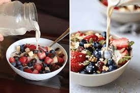
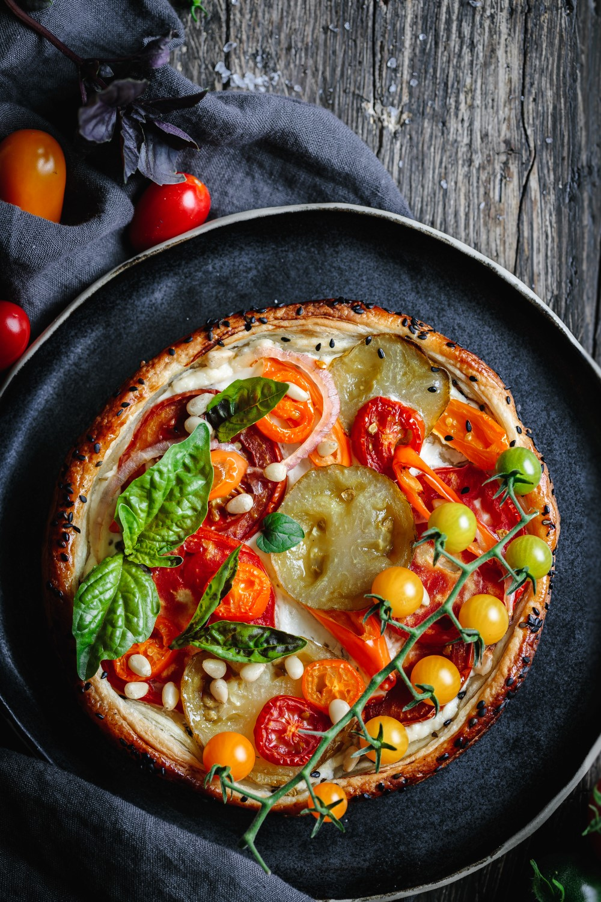
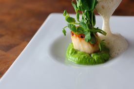

Avocado
I could eat this avocado salad with crunchy cucumbers every day

Strawberry Pear
The strawberry pear is the fruit of the much-admired climbing cactus
Smoothie
A smoothie is so much more than blended fruit. It's an art with all of its different elements blending perfectly together.
FOODIE FANATIX REVIEWS
50+ Best Food International for All Food Lovers

Sweet & Sour Prawns
This dish comes together in just 20 minutes for a simple and flavorful dinner.
View More
Vegetarian Cobb Saland
A classic Cobb Salad made meatless with chickpea, becon, filled crisp green and hard-boiled eggs.
View More
Noodle with Bread
This classic Italian sauce combines ingredients like garlic cloves, parmesan and basil, which gives it its signature green colour
View More

Berries Musel
Tona's Resturant
This is really good, I only did the honey mix and the oats though coz that’s all they had but it worked really well

Noodles
Jeremy Resturant
In a container with a lid, arrange the noodles, baby tomato, snow peas and edamame. Place the sauce and the vegetable-noodle mixture.

Scallop Mousse
Great British Chefs
A seafood starter is a always a popular choice when catering for pescatarians or meat eaters - and for good reason.